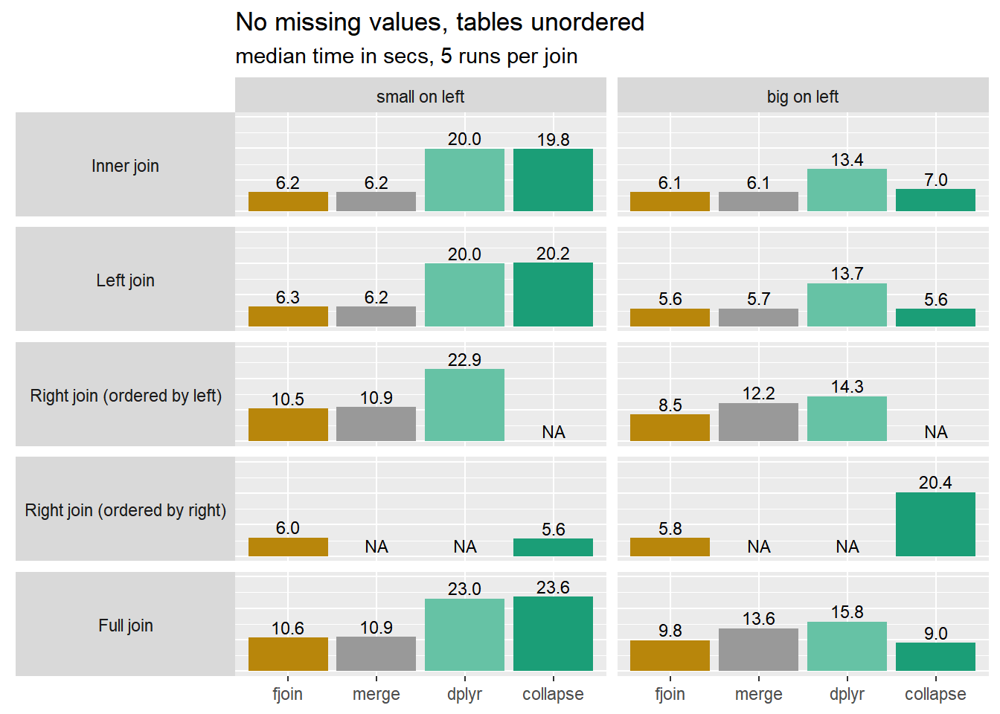

Guide to fjoin
Description
fjoin is a data frame join package that runs on data.table, using no-copy conversions and case-specific solutions for very fast performance on equi and non-equi joins of all styles. It plugs seamlessly into tidyverse pipelines and general workflows, and has features not found in other frameworks, including NA-safety by default, on-the-fly column selection, flexible row-order preservation, multiple-match handling on both sides, and an indicator column for row origin.
Installation
Latest version from GitHub :
remotes::install_github("trobx/fjoin")Features
General use: Works with any data-frame–like inputs (e.g. data.frame, data.table, tibble, sf, sf‑tibble, or list) and returns an appropriate class without requiring manual conversions or data.table expertise.
Scope: Inner, left, right, full, semi‑, and anti‑joins with equality and inequality conditions, plus cross joins.
NA-safe by default: Missing values are treated sensibly (no matches on
NA) unless overridden viamatch.na.On-the-fly column selection: The
selectargument lets you choose and order columns for efficient one-liners.Flexible order: The
orderargument controls which data frame’s row order is preserved in the result (without expensive sorting).Tag row origin: The
indicateoption adds a Stata‑style marker column showing each row’s source.Multiple‑match handling on both sides: Arguments
mult.xandmult.yspecify how to handle multiple matches on either or both sides, including in semi‑ and anti‑joins.Transparency and mock joins: Print the resulting data.table code instead of (or as well as) executing, or run “mock” joins without data that output template code.
High performance: Uses a “cookbook” of data.table join recipes and efficiently casts inputs and outputs for speed and memory-efficiency.
Lightweight dependency: Depends only on data.table, a mature, dependency‑free package with long-term stability.
API
| fjoin_* functions | dtjoin* functions |
|---|---|
x/y style |
Extended DT[i] style |
fjoin_inner(), fjoin_left(), fjoin_right(), fjoin_full()
|
dtjoin() |
fjoin_left_semi (alias fjoin_semi), fjoin_right_semi()
|
dtjoin_semi() |
fjoin_left_anti (alias fjoin_anti), fjoin_right_anti()
|
dtjoin_anti() |
fjoin_cross() |
dtjoin_cross() |
The fjoin_* wrappers translate the dtjoin* functions into a familiar x/y style for mainstream use. The dtjoin* functions handle object classes and write data.table code via a generalisation of DT[i] syntax.
Examples
Example 1: Basic usage and options
This example uses fjoin_full(), which nests other cases.
# data frames
dfQ <- data.table::fread("
id quantity notes other_cols
2 5 '' ...
1 6 '' ...
3 7 '' ...
NA 8 'oranges (not listed)' ...
", quote ="'", data.table = FALSE)
dfP <- data.table::fread("
id item price other_cols
NA apples 10 ...
3 bananas 20 ...
2 cherries 30 ...
1 dates 40 ...
", data.table = FALSE)(1) Basic syntax (note the default match.na = FALSE)
fjoin_full(dfQ, dfP, on = "id")
#> id quantity notes other_cols item price R.other_cols
#> 1 2 5 ... cherries 30 ...
#> 2 1 6 ... dates 40 ...
#> 3 3 7 ... bananas 20 ...
#> 4 NA 8 oranges (not listed) ... <NA> NA <NA>
#> 5 NA NA <NA> <NA> apples 10 ...(2) Efficient join-select in one line
fjoin_full(dfQ, dfP, on = "id", select = c("item", "price", "quantity"))
#> id item price quantity
#> 1 2 cherries 30 5
#> 2 1 dates 40 6
#> 3 3 bananas 20 7
#> 4 NA <NA> NA 8
#> 5 NA apples 10 NAEquivalent to the following in dplyr (where the first two lines avoid joining irrelevant columns):
x <- dfQ |> select(id, quantity)
y <- dfP |> select(id, item, price)
full_join(x, y, join_by(id), na.matches = "never") |>
select(id, item, price, quantity)(3) Indicator column for row origin
1 left only, 2 right only, 3 joined from both. In Stata since 1985!
fjoin_full(
dfQ,
dfP,
on = "id",
select = c("item", "price", "quantity"),
indicate = TRUE
)
#> .join id item price quantity
#> 1 3 2 cherries 30 5
#> 2 3 1 dates 40 6
#> 3 3 3 bananas 20 7
#> 4 1 NA <NA> NA 8
#> 5 2 NA apples 10 NA(4) Order rows by y then x
fjoin_full(
dfQ,
dfP,
on = "id",
select = c("item", "price", "quantity"),
indicate = TRUE,
order = "right"
)
#> .join id item price quantity
#> 1 2 NA apples 10 NA
#> 2 3 3 bananas 20 7
#> 3 3 2 cherries 30 5
#> 4 3 1 dates 40 6
#> 5 1 NA <NA> NA 8(5) Display code instead of executing
fjoin_full(
dfQ,
dfP,
on = "id",
select = c("item", "price", "quantity"),
indicate = TRUE,
order = "right",
do = FALSE
)
#> .DT : x = dfQ (cast as data.table)
#> .i : y = dfP (cast as data.table)
#> Join: setDF(with(list(fjoin.temp = setDT(.DT[, fjoin.DT.rn := .I][, na.omit(.SD, cols = "id"), .SDcols = c("id", "quantity", "fjoin.DT.rn")][, fjoin.ind := TRUE][.i, on = "id", data.frame(.join = fifelse(is.na(fjoin.ind), 2L, 3L), id, item, price, quantity, fjoin.DT.rn), allow.cartesian = TRUE])), rbind(fjoin.temp, setDT(.DT[!fjoin.temp$fjoin.DT.rn, data.frame(id, quantity, fjoin.DT.rn)])[, .join := 1L], fill = TRUE))[, fjoin.DT.rn := NULL])[]Example 2: M:M inequality join reduced to 1:1 using mult.x and mult.y
data.table (mult) and dplyr (multiple) have options for reducing the cardinality on one side of the join from many (“all”) to one (“first” or “last”). fjoin (mult.x, mult.y) will do this on either side of the join, or on both sides. This example (using fjoin_left()) shows an application to temporally ordered data frames of “events” and “reactions”.
(1) For each event, all subsequent reactions (M:M)
fjoin_left(
events,
reactions,
on = c("event_ts < reaction_ts"),
)
#> event_id event_ts reaction_id reaction_ts
#> 1 1 10 1 30
#> 2 1 10 2 50
#> 3 1 10 3 60
#> 4 2 20 1 30
#> 5 2 20 2 50
#> 6 2 20 3 60
#> 7 3 40 2 50
#> 8 3 40 3 60(2) For each event, the next reaction (1:M)
fjoin_left(
events,
reactions,
on = c("event_ts < reaction_ts"),
mult.x = "first"
)
#> event_id event_ts reaction_id reaction_ts
#> 1 1 10 1 30
#> 2 2 20 1 30
#> 3 3 40 2 50(3) For each event, the next reaction, provided there was no intervening event (1:1)
fjoin_left(
events,
reactions,
on = c("event_ts < reaction_ts"),
mult.x = "first",
mult.y = "last"
)
#> event_id event_ts reaction_id reaction_ts
#> 1 1 10 NA NA
#> 2 2 20 1 30
#> 3 3 40 2 50Example 3: fjoin_* to dtjoin* to data.table and outputs
An illustration showing:
- two calls to
fjoin_left()(commented out), differing in theorderargument - the resulting calls to
dtjoin(), plusshow = TRUE - the generated data.table code and output.
# data frames
set.seed(1)
df_x <- data.frame(id_x = 1:3, col_x = paste0("x", 1:3), val = runif(3))
df_y <- data.frame(id_y = rep(4:2, each = 2), col_y = paste0("y", 1:6), val = runif(6))
# (1) fjoin_left(df_x, df_y, on = "id_x == id_y", mult.x = "first")
dtjoin(
df_y,
df_x,
on = "id_y == id_x",
mult = "first",
i.main = TRUE,
prefix = "R.",
show = TRUE
)
#> .DT : df_y (cast as data.table)
#> .i : df_x (cast as data.table)
#> Join: .DT[.i, on = "id_y == id_x", mult = "first", data.frame(id_x, col_x, val = i.val, col_y, R.val = val)]
#> id_x col_x val col_y R.val
#> 1 1 x1 0.2655087 <NA> NA
#> 2 2 x2 0.3721239 y5 0.6607978
#> 3 3 x3 0.5728534 y3 0.8983897
# (2) fjoin_left(df_x, df_y, on = "id_x == id_y", mult.x = "first", order = "right")
dtjoin(
df_x,
df_y,
on = "id_x == id_y",
mult.DT = "first",
nomatch = NULL,
nomatch.DT = NA,
prefix = "R.",
show = TRUE
)
#> .DT : df_x (cast as data.table)
#> .i : df_y (cast as data.table)
#> Join: setDF(with(list(fjoin.temp = setDT(setDT(.i[, fjoin.i.rn := .I][.DT[, fjoin.DT.rn := .I], on = "id_y == id_x", nomatch = NULL, mult = "first", data.frame(id_x = i.id_x, col_x = i.col_x, val = i.val, fjoin.DT.rn = i.fjoin.DT.rn, fjoin.i.rn)])[.i, on = "fjoin.i.rn", nomatch = NULL, data.frame(id_x = id_y, col_x, val, fjoin.DT.rn, col_y, R.val = i.val)])), rbind(fjoin.temp, .DT[!fjoin.temp$fjoin.DT.rn], fill = TRUE))[, fjoin.DT.rn := NULL])[]
#> id_x col_x val col_y R.val
#> 1 3 x3 0.5728534 y3 0.8983897
#> 2 2 x2 0.3721239 y5 0.6607978
#> 3 1 x1 0.2655087 <NA> NAPerformance
fjoin benchmarks strongly against other frameworks and in particular seems to be more robust to the direction of the join. These examples are very simple, to allow comparison with merge.data.table and collapse which have limited feature sets, and don’t do justice the richer functionality of fjoin and dplyr. See the Performance article for more detail.

The performance of fjoin straightforwardly reflects data.table in the inner and left joins, but the right and full joins perform a bit better than merge.data.table. This is typical: fjoin’s solutions for join types and additional options that are not straightforward in native data.table have been developed with close attention to performance.
Notes for tidyverse users
Reasons to use fjoin are its shorter-and-sweeter syntax, faster large data performance, and options that dplyr::*_join() doesn’t support (the converse is also true — see below). There’s no particular reason to attach it: you can just plug it into your pipe using a qualified reference with ::.
library(dplyr)
dfQ |>
as_tibble() |>
fjoin::fjoin_left(dfP,
on = "id",
select = c("item", "price", "quantity"),
indicate = TRUE,
order = "right") |>
mutate(revenue = price * quantity)
#> # A tibble: 4 × 6
#> .join id item price quantity revenue
#> <int> <int> <chr> <int> <int> <int>
#> 1 3 3 bananas 20 7 140
#> 2 3 2 cherries 30 5 150
#> 3 3 1 dates 40 6 240
#> 4 1 NA <NA> NA 8 NAIt’s also worth mentioning that fjoin is much more complete than dtplyr’s data.table-backed implementation of joins, which requires object conversions and doesn’t respect dplyr’s additional join arguments such as na.matches and multiple (in fact it silently ignores them).
On the other hand, fjoin currently has no equivalent of dplyr::*_join()’s relationship argument: it is silent and laissez-faire about cardinality. Nor does it yet support rolling joins, which dplyr achieves elegantly via helper functions in join_by. These features will be added. Nested/list‑column joins (supported by dplyr::*_join()) are not planned.
Notes for data.table users
fjoin makes data.table joins faster to code by providing a unified interface that far outclasses merge.data.table. Even in simple joins, there is little reason not to use it: its solutions are as fast or faster than merge, and slightly faster and more efficient than native data.table in some circumstances (see below).
However, fjoin is not a substitute for the full versatility of data.table joins. It does not support:
- compute-on-join, i.e. specifying computations on the joined columns inside
j, rather than simply selecting them (including data.table’s unique and memory-efficientby=.EACHImechanism for “j-as-you-go” computations). However, usingdo = FALSEcan provide a coding headstart in such cases by letting you copy the console output and edit thej-expression(s). - joins by reference of the direct form
DT[i, on = <on> , v := i.v](although the assignment patternDT[, v := fjoin_left(DT, i, on = <on>, select = "v")$v]can be used) - for now, rolling and overlap joins.
The package actually began life as a tool to solve data.table’s garbling of join columns in non-equi joins. It still does that:
library(data.table)
DT1 <- data.table(t=c(5,25,45))
DT2 <- data.table(t_start=c(1,21), t_end=c(10,30))Range join with fjoin:
dtjoin(DT2, DT1, on=c("t_start <= t", "t_end >= t"), show = TRUE)
#> .DT : DT2
#> .i : DT1
#> Join: setDT(.DT[.i, on = c("t_start <= t", "t_end >= t"), data.frame(t_start = x.t_start, t_end = x.t_end, t), allow.cartesian = TRUE])[]
#> t_start t_end t
#> <num> <num> <num>
#> 1: 1 10 5
#> 2: 21 30 25
#> 3: NA NA 45Compare the output from data.table:
library(data.table)
DT2[DT1, on=.(t_start <= t, t_end >= t)]
#> t_start t_end
#> <num> <num>
#> 1: 5 5
#> 2: 25 25
#> 3: 45 45The reason fjoin prefers data.frame() coupled with setDT() to the more usual list() in j is to avoid an unnecessary deep copy of the joined columns. Likewise, fjoin avoids deep copies on the way in and out by “shallow-casting” inputs and outputs to and from data.tables as necessary. Shallow conversion is not a safe general way of operating with foreign objects in data.table, but it works for joins, because the input vectors only need to be read, and the output vectors are guaranteed to be unshared.
One consequence of this is that fjoin is faster than data.table itself with standard interactive idioms. Consider the following exaggerated example, where the i expression is a data.frame and we select columns in j with list() (aliased .()) in the usual way:
n <- 1e6L; ncolDT <- 2L; ncolDF <- 10L
DT <- data.table(id = rep(1:n, each = 5L), matrix(runif(n * ncolDT), ncol = ncolDT))
DF <- data.frame(id = 1:n, matrix(runif(n * ncolDF), ncol = ncolDF))
bench::mark(
iterations = 5,
check = TRUE,
data.table = DT[DF, on = .(id), .(id, V1, V2, X1, X3, X5, X7, X9)],
fjoin = dtjoin(DT, DF, on = "id", select.i = c("X1", "X3", "X5", "X7", "X9"))
) |> summary() |> subset(select = c("expression", "n_itr", "median", "mem_alloc"))
#> # A tibble: 2 × 3
#> expression median mem_alloc
#> <bch:expr> <bch:tm> <bch:byt>
#> 1 data.table 372ms 752MB
#> 2 fjoin 198ms 366MBfjoin is faster here because it dodges a call to as.data.table.data.frame on the way in, and a call to as.data.table.list on the way out, both of which (currently) deep-copy. The bench::mark memory measurements exclude C-level allocations, but the difference between them reflects these R-level copies. This behaviour will eventually change in data.table, at which point fjoin will revert to the more familiar j = list() idiom.
Notes for sf users
TODO:
- attribute joins between sf objects permitted (not in dplyr)
- sfc-class output columns always detected and refreshed regardless of whether sf
- an example
Acknowledgments
TODO: data.table team, idesign